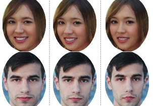

Sarah Lewin: Science Writer

I am a science writer and graduate student at New York University's Science, Health and Environmental Reporting program. My work has appeared in The Scientist, on WGBH's Inside NOVA, on Boston Children's Hospital's Vector science and innovation blog, in Johns Hopkins Medicine Magazine, and in the Baltimore Symphony Orchestra's Overture Magazine as well as on Scienceline.org, where I am the current multimedia editor. I've reported and written blogs, promoted organizations with social media, copyedited, led an improv comedy group, and written press releases (and once I foolishly coded a database interface). Super shiny resume here, and my twitter feed is here. Email me here.
If you're looking for my blog, that's back on Wordpress. Check out my (admittedly not recently updated) posts explaining everything from the Tetris Effect to How Not to Sit in a Chair.
Along with programming in Python, I also know how to do things in HTML and Javascript sometimes; see below for a sortable selection of writing clips. Thanks for visiting!
All
Inside NOVA
Scienceline
Vector
Other
Scienceline

Thinking machines?
A Turing test doesn't measure a computer's intelligence, but it does say something about its usefulness.
Scienceline
Written in the clouds
Cargo ships and weather balloons - no one said MAGIC was easy.
The Scientist

A face to remember
MIT group's 'feature tuning' algorithm can make your profile more (or less) memorable.
Scienceline (video)

Close up: Fly's Eye Photography
Artist M. Henry Jones turns lenses and lighting into 3D portraits that really pop. With Joshua A. Krisch
Scienceline (infographic)

Planet-hunter's guide to the galaxy
Do you know a star that's acting strangely? It might have...an exoplanet! It's more common than you think.
Scienceline
Science and art collide in space images
What are we really seeing when we look at photos of planets and stars?
Scienceline

Florida's extraordinary mangroves
'Walking trees' guard the shores of Florida and thrive in the salty water.
Scienceline

Expecting the unexpected in space
NASA has a long history of repurposing old missions that finish or go awry and ending up with great science.
Scienceline

Our sleeping sun
Scientists wonder what's in store as sun activity lingers at lowest in over a century.
Scienceline
Will Comet ISON survive?
Tiny ice ball meets giant fireball.
Scienceline

A light touch
New twist on microscopic technique lets users feel the forces pressing in on particles.
Vector (Boston Children's Hospital)

From discovery to trial
A drug that may correct 'lazy eye.'
Vector (Boston Children's Hospital)

A secret in the plasma
Strengthening newborns' immune systems.
Vector (Boston Children's Hospital)

Finding the best stem cell for the job
Although stem cells have the potential to differentiate into any type, they often prefer a particular route.
Vector (Boston Children's Hospital)

Decoding kidney disease
Over one third of chronic kidney diseases are caused by single mutations on single genes.
Vector (Boston Children's Hospital)

A mutation and a mystery
In mice, weight gain without a change in energy use.
Inside NOVA

Encryptions Past, Present, and Future
Five-part series on the history and future of cryptography. (Blog for WGBH's NOVA TV program)
Inside NOVA

Adventures in swarm robotics
Harvard's thousand-robot army is almost complete. (Blog for WGBH's NOVA TV program)
Brown Daily Herald

Brain patterns of passion revealed
Love may be in the air, but it is also in your brainwaves.
Johns Hopkins Medicine Magazine
Baby dino yields big clues
Scientists look to antiquity for insight into modern human anatomy.
{kind=link}